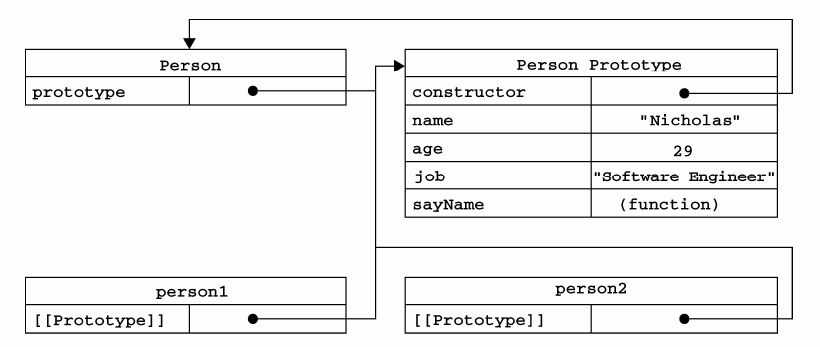

什么是原型（对象）
概念
原型是一个对象，自然有一个内置的[[prototype]]属性（不可以被直接访问），这个属性所对应的就是该对象的原型；同时自动获得一个constructor(构造函数)属性，这个属性包含一个指针，指向创建所有指向该原型的实例的构造函数
原型链
原型链：当从一个对象那里调取属性或方法时，如果该对象自身不存在这样的属性或方法，就会去自己关联的prototype对象（内部初始化的[[prototype]]属性）那里寻找，如果prototype没有，就会去prototype关联的前辈prototype那里寻找，如果再没有则继续查找Prototype.Prototype引用的对象，依次类推，直到Prototype.….Prototype为undefined（Object的Prototype就是undefined）从而形成了所谓的“原型链”。

易错解析
1）区别对象、原型、函数、构造函数
①对象，有一个内置的[prototype]]属性，这个属性所对应的就是该对象的原型，但是这个属性不能
被直接访问的。所以为了方便查看一个对象的原型，Firefox和Chrome中提供了__proto__
这个非标准（不是所有浏览器都支持）的访问器,（ECMA引入了标准对象原型访问器”Object.getPrototypeOf(obj)”）
②原型,是一个对象，因此拥有内置的[prototype]]属性，同时自动获得一个constructor属性，
这个属性包含一个指针，指向创建所有指向该原型的实例的构造函数
③函数，作为对象，有一个内置的[prototype]]属性，这个属性所对应的就是该对象的原型Function；
作为函数，会根据一组特定的规则为该函数创建一个特殊的prototype内置属性，指向函数对象的原型对象
④构造函数（命名时首字母一般大写），执行var p = new Person('张三',20);创建对象的时候，发生了四件事情：
var obj={}; 初始化一个对象obj。
obj._proto_=Person.prototype;，将对象obj的 __proto__ 属性设置为 Person.prototype
Person.call(obj,”张三”,20);调用构造函数Person来初始化obj
return obj;//将obj的引用传递给p
__proto__属性是一些浏览器为了可以访问到对象的原型而设置的，是来代替对象内置的[prototype]]属性，而在函数被创建时，会根据一组特定的规则为该函数创建一个特殊的prototype内置属性，该函数的prototype属性值将被作为原型赋值给所有对象实例（也就是设置实例的__proto__属性）
Object对象本身是一个函数对象,有prototype属性，所以可以看到”Object.prototype”的值就是”Object {}”这个原型对象,当访问”Object.prototype”对象的”constructor”这个属性的时候，就得到了Obejct函数
2）原型链（家庭关系图）：有构造函数（中介）参与的儿子（实例）找爸爸（原型,用中介.prototype来表示）的过程，儿子通过__proto__属性委托中介（儿子._proto__=中介.prototype）通过prototype属性帮找爸爸，爸爸可以通过constructor属性定位中介（间接找儿子），儿子也可以通过在爸爸那里得到constructor属性从而间接定位中介，因此，在寻找过程必须时刻明确角色和行为，注意！这些关系成立的前提是对象的原型没有被重写
3）是否应该拓展内建对象？
学习了原型，我们可以知道内建对象(更准确是内建的构造函数)的来龙去脉，也就可以在适当的时候对它进行扩展（具体实现），而且应该养成这样的习惯，想通过原型为某个对象添加属性和方法时，先检查其是否存在
if(!String.prototype.reverse){...}
4)一些原型陷阱
①当我们对原型对象执行完全替换时，可能会触发原型链的某种异常（exception）
②prototype.constructor属性是不可靠的,因此当我们重写某对象的原型对象（Prototypr）时，重置相应的constructor属性